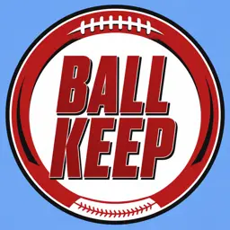

BALL KEEP
Superflex · PPR · Sleeper
Player File · WR NE

A.J. Brown
WR · NE · 29 · Ole Miss
2026 · through Week 10
Counting stats
Yearly
| Year | G | Snap % | Touches | Tgt | Rec | Yds | TD | Rush | RuYd | ReYd | PPR |
|---|---|---|---|---|---|---|---|---|---|---|---|
| 2026 | 4 | 63.5% | 11 | 26 | 11 | 128 | 0 | 0 | 0 | 128 | 23.8 |
| 2025 | 15 | 90.5% | 78 | 121 | 78 | 1,003 | 7 | 0 | 0 | 1,003 | 220.3 |
| 2024 | 13 | 86.2% | 67 | 97 | 67 | 1,079 | 7 | 0 | 0 | 1,079 | 216.9 |
| 2023 | 17 | 93.1% | 106 | 158 | 106 | 1,456 | 7 | 0 | 0 | 1,456 | 289.6 |
Game by game · 2026
| Wk | Opp | Snap % | Touches | Tgt | Rec | Yds | TD | Rush | RuYd | ReYd | PPR |
|---|---|---|---|---|---|---|---|---|---|---|---|
| 1 | @ SEA | 43.7% | 3 | 4 | 3 | 26 | 0 | 0 | 0 | 26 | 5.6 |
| 2 | vs PIT | - | - | - | - | - | - | - | - | - | - |
| 3 | @ JAX | - | - | - | - | - | - | - | - | - | - |
| 4 | @ BUF | - | - | - | - | - | - | - | - | - | - |
| 5 | vs LV | - | - | - | - | - | - | - | - | - | - |
| 6 | vs NYJ | 76.5% | 3 | 10 | 3 | 27 | 0 | 0 | 0 | 27 | 5.7 |
| 7 | @ CHI | 90.7% | 3 | 6 | 3 | 48 | 0 | 0 | 0 | 48 | 7.8 |
| 8 | @ MIA | - | - | - | - | - | - | - | - | - | - |
| 9 | vs GB | - | - | - | - | - | - | - | - | - | - |
| 10 | @ DET | 47.5% | 2 | 6 | 2 | 27 | 0 | 0 | 0 | 27 | 4.7 |
| Total | 63.5% | 11 | 26 | 11 | 128 | 0 | 0 | 0 | 128 | 23.8 |
Regular-season line from Sleeper. Touches are carries plus catches. Yards are rushing plus receiving. Snap % is offensive snaps divided by team offensive snaps.
The tape
A.J. Brown is on the Hot board as a price-and-situation name. Sports Arena's note is specific: PFM WR14 versus ECR WR20, and the trade they want is Brown for Luther Burden straight up. We already endorsed that on Burden's page if you are contending. Brown's 2025-26 highlight mix in New England is a veteran X still winning at the catch point.
Patriots football with Maye is a better long-term passing environment than people admit, which is the sneaky plus. The minus is the new playbook and the age. You are buying 2026-27 production, not 2030 production.
Plus
- Hot: Sports Arena - PFM WR14 vs FantasyPros ECR WR20; buy for Luther Burden straight up.
- Yates PPR 26th - still a WR2 you can start in New England's offense.
Minus
- New team (NE) is a real adjustment; chemistry weeks can look like WR3 weeks.
- Age relative to the Burden/Nabers cluster is why this is a win-now Hot, not a rebuild Hot.
Board graph
Spread 40-123 · 34 sources
Every Board
Spread 40-123 · 34 sources
| Source | Rank |
|---|---|
| ESPN (Karabell) | 40 |
| Mike Clay (ESPN) | 54 |
| FantasyPros ECR | 75 |
| Fantasy Life | 83 |
| Fantasy Points Superflex | 83 |
| Dynasty Nerds | 86 |
| PFF Dynasty | 90 |
| PFN (Katz/Soppe) | 91 |
| RotoWire | 91 |
| Rotoworld | 91 |
| Sleeper Superflex | 91 |
| 4for4 | 91 |
| DLF ADP mix | 91 |
| FantasyData Superflex | 91 |
| DLF Superflex | 94 |
| The Athletic | 94 |
| CBS Sports | 94 |
| Underdog ADP | 94 |
| Footballguys | 94 |
| Fantasy Alarm | 94 |
| FFToday | 94 |
| Contender board | 94 |
| Sports Illustrated Dynasty | 94 |
| Pro Football Reference | 94 |
| RotoGrinders Superflex | 94 |
| Superflex market mash | 94 |
| Fantasy Footballers | 98 |
| Establish The Run | 98 |
| numberFire | 98 |
| PlayerProfiler | 98 |
| Rebuild board | 98 |
| RotoBaller Dynasty | 98 |
| Dynasty Trade Calculator | 107 |
| KeepTradeCut SF | 123 |
Tape · 2025 season
A.J Brown Highlights || 2025-2026 Season
BK News
- Tetairoa McMillan Injury Update: Everything Fantasy Managers Need To Know About the Panthers WR's Status
- AJ Brown is expected to miss multiple weeks due to his hamstring injury, per @MikeReiss and me.
- Is James Cook playing today? Latest on Bills RB for Week 10
All player pages · The Keep · The Board · Recent deals · Hot 'n' Cold · BK News · Trade calculator